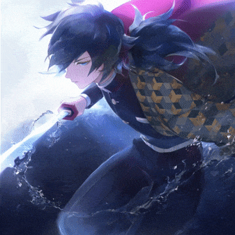

FREE
VACANCIES
VACANCIES
UI/UX
designer Adobe XD
Adobe Photoshop
Adobe After Effects
OWOX BI
Miro
FlowMapp
MindMeister
A UX designer is a specialist who creates or develops a product so that it is as effective as possible, and solves the main problems and tasks of users. For example, he thinks over an application for ordering a product or service so that all elements are logical and understandable, and the client immediately understands how to use it.
The UI designer is the one who is responsible only for the visual execution of the concept of the UX designer, and the UX writer is responsible for the text design: the names of buttons and pages, descriptions of steps, tips and labels.
Click the circles in the top right to see other vacancies.
Click the circles in the top right to see other vacancies.
Game
testerXcode/Android Studio
Fiddler
Charles
Postman
Browserstack
Genymotion
VirtualBox
Vagrant
The tester's job is to ensure that all product features described in the functional assignment perform as expected. Errors of work, or bugs, it detects by different types of testing. The design, the frontend, and the server side are checked for bugs more than once.
To clearly explain what testers do, we will give an example of tasks for junior applicants. Most often, juniors are asked to test household programs, for example, a calculator. Sometimes - to find errors in the service where they are located.
If this is an application, the applicant is asked to find ten errors in it. These are pretty commonplace examples, but they tell you what employers are looking for.
Tool
programmerHTML+CSS
JavaScript
jQuery
ES6
Chrome DevTools
Angular, React and Vue
Node.js
RESTful API
A tools programmer is someone whose sole purpose is to help others make better games. As a tools programmer, you almost never work directly on a game. Instead, you work on internal tools that help artists and designers get their art and ideas into the game as quickly and effortlessly as possible.
Web design is how a website looks like, while front-end development is how a design is implemented on a website and interacts with users. That is, to put it simply, front-end development is the creation of the client side of the site. A front-end developer is a person who is responsible for creating the client side.
WANNA
JOIN US?
JOIN US?
Fill out your resume and send it to us by mail. Take the first step towards your dream job!!

Summary
.gif)
NAME
AGE
GENDER
EDUCATION
Here we propose to answer you general questions.
- tell us about yourself
- What are your strengths?
- What are your weaknesses?
- Why do you want to work with us?
write here hehe
Lets practice
It's time to practice a little.Write a program.
Write about your skills a bit more.
Strengths
GlSceneMicrosoft Visual C++ Borland Delphi 7lluviatormentasUnity 3DMakeHumanUltimate 3DMicrosoft Visual BasicGameMaker
Weaknesses
UNITYLofeoRuidoCalorLosespacioSony Vegas
HARDSIDE
Main Problem
The main disadvantage of working at gamedev is professional burnout. As a result, after a long period of work in game development, you may encounter aversion to games or lose interest in them for a short period of time.
The most important thing before committing yourself to the video game industry is to understand why you came there, what you want to achieve and what you are striving for. Do you have the required "knowledge base" for a particular specialty, it does not mean that you will succeed. You will have to study even after mastering the basic skills of the chosen specialty, so only a persistent and flexible candidate can handle it.